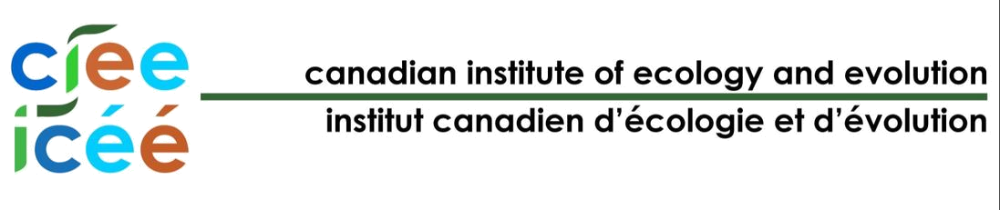
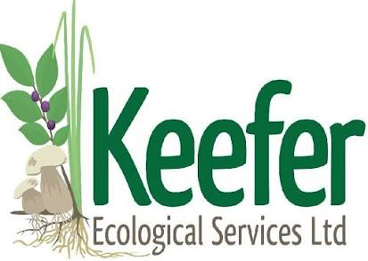

Date | Taxon | Locality | Recorder | Record type | Institution | Catalogue no. | Latitude | Longitude | Uncertainty (m) | Elevation | Count | Establishment | Identified by | Date identified | Type status | Collection | Record no. | Licence | Rights holder | Occurrence ID | GBIF ID | |
|---|---|---|---|---|---|---|---|---|---|---|---|---|---|---|---|---|---|---|---|---|---|---|
| 1967-06-14 | Abies amabilis | V.I. , Brentwood, end of Greig Rd. | Harrison, A. S. | PRESERVED_SPECIMEN | Université Laval | QFA0212927 | 48.566667 | -123.45 | 68 | Chuang, Ching-chang | QFA | 32.4 | CC0_1_0 | Université Laval | QFA0212927 | 1248731719 | ||||||
| 1967-06-14 | Abies amabilis | A.S. Harrison | QFA | QFA021927 | ||||||||||||||||||
| 1967-07-18 | Abies amabilis | Vancouver Island, creek outflow at east end of Durrance Lake | A. S. Harrison | PRESERVED_SPECIMEN | BBM | V216898 | 48.541667 | -123.466667 | C.C. Chuang 1973 | UBC | 37.2A | CC0_1_0 | The University of British Columbia | F75FA487-E806-ED46-B254-237F071C5F8C | 1988068725 | |||||||
| 1967-07-18 | Abies amabilis | A. S. Harrison | BBM | F75FA487-E806-ED46-B254-237F071C5F8C | ||||||||||||||||||
| 1887-02-25 | Abies grandis | Vicinity of Victoria | John Macoun | PRESERVED_SPECIMEN | NHMUK | BM015754290 | 48.428421 | -123.365644 | BOT | s.n. | CC0_1_0 | 16eadc9f-cc91-461b-8931-d9ccff7107a4 | 5028932721 | |||||||||
| 1921-08-05 | Abies grandis | Vancouver Island. Esquimalt | F. W. Hunnewell | PRESERVED_SPECIMEN | NY | 29332 | 48.435825 | -123.411258 | NY | 7626 | CC0_1_0 | The New York Botanical Garden | 55a03525-8e24-4832-99df-8b92e6c4ecb8 | 1928978551 | ||||||||
| 1921-08-05 | Abies grandis | F.W. Hunnewell | NY | NY00029332 | ||||||||||||||||||
| 1966-05-12 | Abies grandis | Vancouver Island, 1 mile north of Prospect Lake, off West Saanich road | A. S. Harrison | PRESERVED_SPECIMEN | BBM | V216893 | 48.541667 | -123.441667 | C.C. Chuang 1973 | UBC | 44.1 | CC0_1_0 | The University of British Columbia | 545C1ABF-3D29-544D-B989-2B549F26D7CE | 1988184875 |
Date | Locality | Recorder | Record type | Institution | Catalogue no. | Latitude | Longitude | Uncertainty (m) | Elevation | Count | Establishment | Identified by | Date identified | Type status | Collection | Record no. | Licence | Rights holder | Occurrence ID | GBIF ID |
|---|
W̱SÁNEĆ peoples have cared for these lands and waters since time immemorial.
The memory preserved here is much more limited: collected specimens, names written down on lists, and observations shared through iNaturalist, reaching back to 1859.
Each record is a moment when someone stopped to take note of a plant.
Some plants are reported often. Some have appeared only in more recent years, while others have quietly disappeared from the record.
The gallery shows native species once reported for the Saanich Peninsula, which have not been seen in recent decades. Some may be lost to us—overlooked, forgotten, or waiting to be rediscovered. Others may be lost because of us, through impacts like habitat change or the introduction of invasive species.
Pick a plant from the gallery to see where and when it was last found, then join local naturalists and community members on a search for the “Lost” Plants of the Saanich Peninsula project on iNaturalist.
Szczawinski and Harrison’s (1972) Flora of the Saanich Peninsula provides the historical baseline for this atlas. Harvey Janszen devoted much of his life to revising this flora, but passed away in 2021, before completing this work. A community of naturalists has since carried those efforts forward; this atlas is a testament to that continuing legacy.
To date, 1105 vascular plant species have been recorded on the Saanich Peninsula, drawing together 216906 records from historical collections, iNaturalist observations and other sources. Each species falls into one of three groups:
Click a group to show only the records of those species, old and recent, on the map and in the list. Open Filters to narrow records by recorder, locality or time period, pick a plant from the list to see only its records, or use the shape tool at the top left of the map to draw an area, double-clicking to finish. Open Records below the map for the details behind each selection.
Through the combined efforts of 7416 individuals, the Saanich naturalist community has now documented a total of 1105 vascular plant species. Since 2000, 85 percent of the historically reported plant diversity has been confirmed and 168 new species reports added to the list.
Community members have now documented 82 percent of the total plant diversity known to the region on iNaturalist.
Contribute to this growing record by submitting your observations to the “Lost” plants of the Saanich Peninsula iNaturalist project.
Here, you can browse photos of some of the most commonly documented plants, as well as recent observations and top observers across the region, based on iNaturalist data. Visualisation code courtesy of Ben Keen.
Every plant in this list is a search waiting to happen. This tool suggests where to begin from the pattern of past sightings alone, applying one component of our protocol for detecting local extinction.
Extirpation probability (EP) runs from 0 (likely still present) to 1 (likely lost locally). Using Solow’s (1993) method, it compares when a species was sighted with the whole period of record, from the earliest collection in our data (1859) to 2025. EP is highest for plants that were recorded repeatedly and then stopped being seen. Plants recorded only once or twice tend to score nearer the middle, since so few records say little either way.
Five steps to a target species:
A high EP is a reason to go looking, not proof of loss. It does not account for where or how hard people have searched, or for suitable habitat, which the full protocol goes on to weigh.
This atlas is a living flora of the W̱SÁNEĆ/Saanich Peninsula, and its records are only as good as what we know of them. If you know whether a plant is still to be found here, whether it was planted, or whether it has failed to establish, please add your note.
Click on any taxon in the checklist below to choose it for curation. You can also choose a taxon from any other part of the atlas, through the speech bubble beside its name.

This project is dedicated to the memory of Harvey Janszen (July 11, 1946–May 10, 2021) and other fellow naturalists, including Hans Roemer, who have passed away in recent years. Harvey spent decades getting to know the plants of the Salish Sea—collecting more than 3000 plant specimens, keeping field journals from 1973 to 2017, and compiling species checklists for the southern Gulf Islands, the Saanich Peninsula, and the San Juan Islands. Through this initiative we invite you to help carry this work forward, by sharing your local plant knowledge and contributing to the co-creation of a living Flora of the W̱SÁNEĆ/Saanich Peninsula.
With thanks to our supporters


Displaying 8 of 8 records for 2 taxa
Pinaceae
-pine family
Abies
-firs
Abies amabilis
-Pacific silver fir
Abies grandis
-grand fir
Taxon name | EP | obs | No coords | Rank | Introduction | Has Voucher | Common Name | Reporting status | ID | Link name | |
|---|---|---|---|---|---|---|---|---|---|---|---|
| Abies amabilis | 0.467 | 4 | ⚠ 2 | species | native | voucher | Pacific silver fir | unconfirmed | 75240 | Abies amabilis | |
| Abies grandis | 0 | 4 | ⚠ 1 | species | native | voucher | grand fir | confirmed | 63690 | Abies grandis |